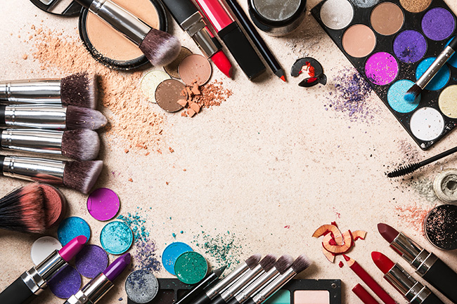

El maquillaje es algo esencial en las mujeres, ya que actualmente existen muchas tendencias, tips, productos especificos etc. La funcion del maquillaje en las mujeres es para resaltar la belleza que posees. En esta pagina te mostrare tips, tendencias, productos e imagenes de ello.
|  |
El maquillaje para la mayoria de las personas que acostumbran llevar maquillaje ya sea hombre o mujer, el maquillaje te ayuda para acentuar los rasgos de la cara y darle mas vida y color. De esta manera tu belleza se vera mas acentuada. Maquillarse bien es muy importante porque puede cambiar la forma como nos ven los demas pero sobre todo nosotros.